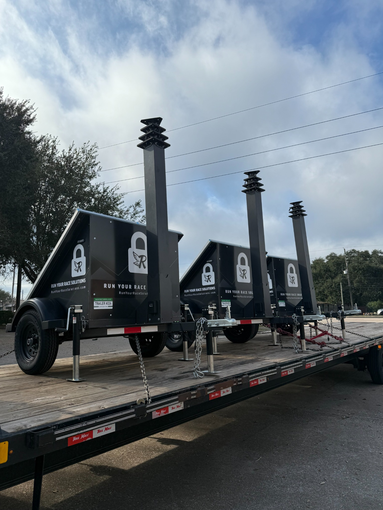

Armed &
Unarmed
Guards
Professional security personnel providing a visible, disciplined presence at your property. Deploy coverage for construction sites, commercial facilities, residential communities, events and more.
Our approach is built around deterrence, access control, patrols, incident response and clear reporting.
Mobile
Surveillance
Trailers

Solar-powered mobile surveillance platforms designed to extend security coverage without permanent infrastructure. Deploy where cameras, lighting and active deterrence are needed quickly.
Security &
Privacy
Fencing
Temporary chain-link fencing, privacy screening and controlled site perimeters for construction, events, commercial properties and sensitive locations.
Remote
Monitoring
24/7 remote monitoring and video verification helps identify activity, verify incidents and escalate response when it matters.
Security
Consulting
Risk assessments, site reviews and practical security strategies tailored to your environment, operations and threat profile.